Chikugo
Chikugo · Fukuoka
Chikugo
Highlighted on the Fukuoka map.
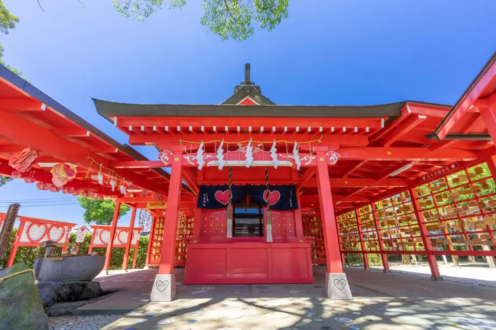
Dining
麺屋 八感
Men Ya Hachi Kan
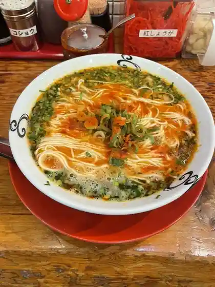
麺房てうち庵 筑後店
Men Bou Teuchi Iori Chikugo Mise
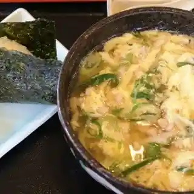
麺楽
Men Raku
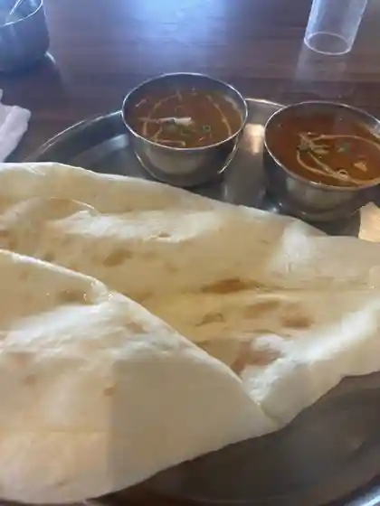
パビタラ
Pabitara
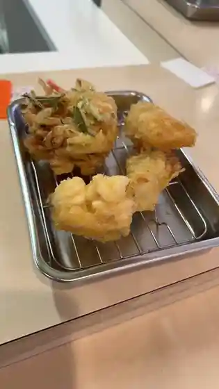
天ぷらまき 筑後店
Tenpura Maki Chikugo Mise
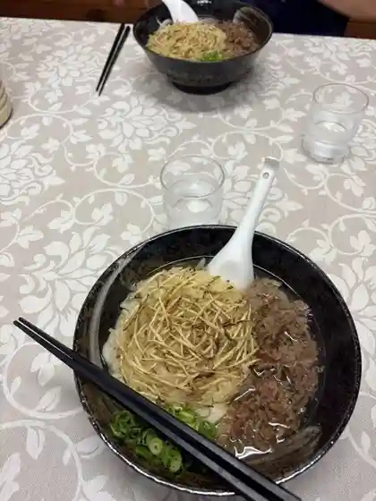
Ikkyuu
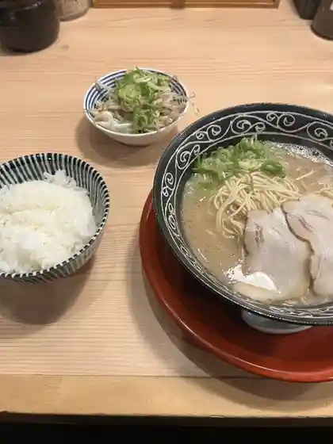
一二三 筑後店
Hifumi Chikugo Mise
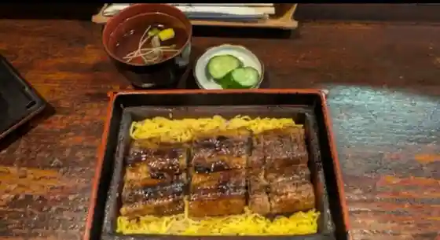
うなぎの次郎長
Unagino Jirochou
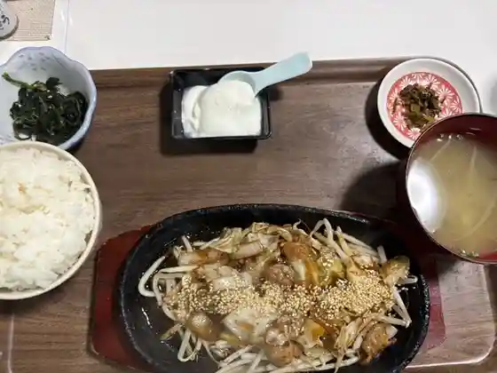
喜楽家食堂
Kiraku Ie Shokudo
牛島製茶 和cafe Leaf Heart 筑後けやき通り店
cafe Leaf Heart
ニュー赤坂焼肉店
Nyuu Akasaka Yakiniku Mise
ジャングルスープカレー
Jangurusuupukaree
イタリアンダイニング アンプ
Itariandainingu Anpu
日若屋
Nichi Jaku Ya
UMORI
UMORI
宮古そば SAIGA 筑後店
SAIGA
WOODY
WOODY
大龍一番 山ノ井店
Tairyuu Ichiban Yama No I Mise
天風堂筑後本店
Tenpuu Dou Chikugo Honten
大福うどん
Daifuku Udon
てぬきうどん まるしん
Tenukiudon Marushin
想夫恋 筑後赤坂店
Soufu Koi Chikugo Akasaka Mise
徳兵衛うどん 筑後店
Tokubyoue Udon Chikugo Mise
串の帝王 雁の巣
Kushi No Teiou Gan No Su
中華麺達 旬風
Chuukamen Tooru Jun Kaze
バーグマン
Baaguman
セリオ
Serio
ハンバーグの店まつお
Hanbaagu No Mise Matsuo
あずみ野 筑後店
Azumi No Chikugo Mise
牛花亭
Ushi Hana Tei
プレシア 福岡アウトレット
Pureshia Fukuoka Autoretto
笑麺一慶
Warai Men Ikkei
よらん野
Yoran No
ホテル樋口軒
Hotel Higuchi Ken
AROI
AROI
王将寿司
Oushou Sushi
桃園
Momozono
クラシック ベーカリー
Kurashikku Beekarii
陣弥地鶏お狩場焼
Jin Ya Jidori O Kariba Yaki
ファームキッチン
Faamukitchin
コトリ
Kotori
ホテルエルモント
Hoteruerumonto
ながはま焼肉
Nagahama Yakiniku
麦工房 ナナクラ
Mugi Koubou Nanakura
六白 筑後店
Roppaku Chikugo Mise
広島お好み焼き おこまる
Hiroshima O Konomi Yaki Okomaru
ちき亭
Chiki Tei
八重山料理とおでん りみか
Yaeyama Ryouri Tooden Rimika
CiAO DOLCEZZA
CiAO DOLCEZZA
野歩ほん
No Ho Hon
めん処 龍の群れ
Men Tokoro Ryuu No Mure
パンカフェ ル・パン
パンカフェ ル・パン
くりの木
Kurino Ki
キャバリアsハウス
Kyabaria S Hausu
ほてい堂深町パン店
Hotei Dou Fukamachi Pan Mise
ホテルアベニュー 筑後
Hoteruabenyuu Chikugo
白龍軒
Hakuryuu Ken
拉麺 久留米 本田商店 筑後店
Raamen Kurume Honda Shouten Chikugo Mise
菓子処 中村屋
Kashi Tokoro Nakamuraya
ロワール
Rowaaru
お多福
O Tafuku
ロココクレープ
Rokokokureepu
唐揚げ専門 たか田商店 八女インター店
Karaage Senmon Taka Ta Shouten Yame Intaa Mise
たこ焼き リーゼンツ
Tako Yaki Riizentsu
ベントハウス 筑後店
Bentohausu Chikugo Mise
5番館
5 Ban Kan
庄屋 ゆめモール筑後店
Shouya Yume Mooru Chikugo Mise
ぎょ。
Gyo .
和処 ふじ村
Wa Tokoro Fuji Mura
パティスリー サロン・ド・テ・ミナミ
パティスリー サロン・ド・テ・ミナミ
HOTEL AZ 福岡筑後店
HOTEL AZ
ウエスト 筑後店
Uesuto Chikugo Mise
丸亀製麺 筑後店
Marugame Seimen Chikugo Mise
久留米ラーメン なかむら亭
Kurume Raamen Nakamura Tei
川の駅船小屋 恋ぼたる 物産館
Kawa No Eki Fune Koya Koi Botaru Bussan Kan
すゑ
Sue
ひらた
Hirata
一凜
Ichi Rin
アトリエ ショコラ
Atorie Shokora
花野
Hanano
揚げてんや花火
Age Tenya Hanabi
椎茸専門店 陽より子
Shiitake Senmonten You Yori Ko
鵲珈琲
Kasasagi Koohii
なにわハウスキッチンぴーす
Naniwa Hausukitchin Piisu
ステーキハウス WINNERs 筑後店
WINNERs
ルイと海と、
Rui To Umi To ,
カフェバー アオ
Kafebaa Ao
コメダ珈琲店 ゆめモール筑後店
Komeda Koohii Mise Yume Mooru Chikugo Mise
川の駅船小屋 恋ぼたる 温泉館
Kawa No Eki Fune Koya Koi Botaru Onsen Kan
山葵
Wasabi
八蔵 筑後店
Hachizou Chikugo Mise
squáre knòt
squre knt
レストラン ほたる
Resutoran Hotaru
四季彩ダイニング茶茶
Shiki Sai Dainingu Chacha
ボンジュール カフェ シャンソン
Bonjuuru Kafe Shanson
おかめ
Okame
なべや えさき
Nabeya Esaki
バジ カフェ
Baji Kafe
ファン'sテラス
Fan 's Terasu
マサラマスター
Masaramasutaa
鶏ＳＨＯＷ
SHOW
あじさい
Ajisai
喜望亭
Kibou Tei
鳥好食肉店
Tori Kou Shokuniku Mise
share cafe Only
share cafe Only
イロハサンド
Irohasando
gelateria ALBA
gelateria ALBA
スシロー ゆめモール筑後店
Sushiroo Yume Mooru Chikugo Mise
やよい軒 筑後店
Yayoi Ken Chikugo Mise
STARBUCKS COFFEE 筑後店
STARBUCKS COFFEE
東京庵
Toukyou Iori
すし大臣 八女インター店
Sushi Daijin Yame Intaa Mise
大将軍
Daishougun
ぶどう畑のケーキ屋さん
Budou Hatake No Keeki Ya San
corro
corro
and喫茶
And Kissa
船小屋
Fune Koya
キッチン マルシェ
Kitchin Marushie
陣太鼓
Jin Taiko
蛸侍
Tako Samurai
小料理 はる吉
Koryouri Haru Kichi
房飲房食 にぎやか 筑後店
Bou In Bou Shoku Nigiyaka Chikugo Mise
焼鳥成
Yakitori Sei
韓国料理 ONMA
ONMA
グムデジ
Gumudeji
つじやま筑後 筑後店
Tsujiyama Chikugo Chikugo Mise
ブックアンドカフェ ハイヌヅカ テーブル
Bukkuandokafe Hainuzuka Teeburu
創菜厨房 千枡
Sousai Chuubou Sen Masu
あおい寿司 長浜店
Aoi Sushi Nagahama Mise
もつ家 力
Motsu Ie Chikara
居酒屋 ひまわり
Izakaya Himawari
鳥よし サニーちくご店
Tori Yoshi Sanii Chikugo Mise
ひょっとこ 筑後店
Hyottoko Chikugo Mise
焼鳥 成兵衛
Yakitori Seihei Mamoru
江口菓舗
Eguchi Ka Ho
ダイニングたなか
Dainingu Tanaka
和食 居酒屋 こわっぱ
Washoku Izakaya Kowappa
ひょうたん酒蔵
Hyoutan Shuzou
CoCo壱番屋 筑後山ノ井店
Coco Ichiban Ya Chikugo Yama No I Mise
弥吉精肉店
Yakichi Seinikuten
森のこかげ健やかハウス
Mori Nokokage Sukoyaka Hausu
麺処あさひや
Men Tokoro Asahiya
漁菜
Ryou Na
中華メルキ〜
Chuuka Meruki ~
焼肉 飛翔
Yakiniku Hishou
べんじろう 筑後店
Benjirou Chikugo Mise
Olu Bagel
Olu Bagel
居酒屋助六
Izakaya Sukeroku
恋Cafe 恋するパンケーキ
Koi Cafe Koisuru Pankeeki
味彩
Aji Sai
のんびりパン屋
Nonbiri Pan Ya
九州大谷短期大学食堂
Kyuushuudai Tani Tankidaigaku Shokudo
BELIEVIT
BELIEVIT
うら家
Ura Ie
焼肉 あんどん
Yakiniku Andon
ハイボールセンター筑後
Haiboorusentaa Chikugo
居酒屋 雅
Izakaya Masa
すき家 209号筑後店
Suki Ie 209 Gou Chikugo Mise
ジョイフル 筑後店
Joifuru Chikugo Mise
マクドナルド 筑後店
Makudonarudo Chikugo Mise
ジョイフル 筑後西牟田店
Joifuru Chikugo Nishimuta Mise
モスバーガー 筑後店
Mosubaagaa Chikugo Mise
無添くら寿司 八女インター店
Mu Soe Kura Sushi Yame Intaa Mise
焼肉きんぐ 八女インター店
Yakiniku Kingu Yame Intaa Mise
松屋 筑後店
Matsuya Chikugo Mise
焼肉弥吉
Yakiniku Yakichi
ベーカリー ゆめのパンやさん
Beekarii Yumeno Pan Yasan
串焼楽酒 ばさら
Kushiyaki Rakushu Basara
ピザハット 筑後前津店
Pizahatto Chikugo Mae Tsu Mise
菓子工房リヨン
Kashi Koubou Riyon
ワインバー プルミエ
Wainbaa Purumie
創作料理 富む
Sousaku Ryouri Tomu
アトリエスカイ
Atoriesukai
きゅうぴっと
Kyuupitto
串かつ 十三
Kushi Katsu Juusan
パティスリークラシック
Pateisuriikurashikku
大八堂 筑後店
Daihachi Dou Chikugo Mise
手づくりパン工房パオパオ
Tezu Kuri Pan Koubou Paopao
博多からあげ 暖 船小屋店
Hakata Karaage Dan Fune Koya Mise
ステラートカフェ
Suteraatokafe
たなから牡丹もち
Tanakara Botan Mochi
イカス食堂
Ikasu Shokudo
本氣のからあげ 筑後店
Honki Nokaraage Chikugo Mise
シフォンケーキ専門店 boda
Shifonkeeki Senmonten Boda
ダイニング full
full
シャトレーゼ 筑後けやき通り店
Shatoreeze Chikugo Keyaki Touri Mise
アモレッテ
Amorette
ほっともっと 羽犬塚店
Hottomotto Hainuzuka Mise
炭火焼鳥ダイニング きらく
Sumibi Yakitori Dainingu Kiraku
旨い肴と酒 辰丸
Umai Sakana To Sake Tatsumaru
Little Morrow 筑後店
Little Morrow
セブンイレブン 筑後船小屋店
Sebun'irebun Chikugo Fune Koya Mise
もち吉 筑後店
Mochi Kichi Chikugo Mise
酒房ふかまち
Sake Bou Fukamachi
ダイニングバー フィズ
Dainingubaa Fizu
アビーロード
Abiiroodo
末広
Suehiro
ミート
Miito
KEE THREE
KEE THREE
セブンイレブン 筑後前津店
Sebun'irebun Chikugo Mae Tsu Mise
ラ・ムー 西牟田店
ラ・ムー 西牟田店
新鮮市場 サカイ筑後店
Shinsen Shijou Sakai Chikugo Mise
とり屋 筑後店
Tori Ya Chikugo Mise
レストラン 蔵
Resutoran Kura
健勝堂
Kenshou Dou
ビジネスホテル明治館
Bijinesuhoteru Meiji Kan
おうち食堂
Ouchi Shokudo
大衆居酒屋 海柳
Taishuu Izakaya Umi Yanagi
千石
Sengoku
企画室
Kikakushitsu
ほっともっと 筑後野町店
Hottomotto Chikugo Nomachi Mise
ひよ子本舗 吉野堂 サンリブ筑後店
Hiyo Ko Honpo Yoshino Dou Sanribu Chikugo Mise
ぎょうざ工房鶴家
Gyouza Koubou Tsuru Ie
鉄なべ
Tetsu Nabe
ごりさんふーどまーけっと
Gorisanfuudomaaketto
cafe poppo
cafe poppo
城崎農園
Kinosaki Nouen
酒場 きっすい
Sakaba Kissui
からあげののまぐち
Karaagenonomaguchi
杉山焼肉店
Sugiyama Yakiniku Mise
赤坂飴本舗
Akasaka Ame Honpo
居酒屋おしどり
Izakaya Oshidori
セブンイレブン 筑後山ノ井店
Sebun'irebun Chikugo Yama No I Mise
Cafe&bar.61
Cafe&bar.61
いのくち
Inokuchi
隆勝堂 ゆめモール筑後店
Takashi Kachi Dou Yume Mooru Chikugo Mise
炭火焼dining SHUN
dining SHUN
旬彩処 らく
Jun Sai Tokoro Raku
カフェ プレ
Kafe Pure
沖津屋
Okitsu Ya
BINGO
BINGO
シャ・ラ・ラ
シャ・ラ・ラ
すなっく縁 ゆかり
Sunakku Heri Yukari
味楽亭安
Aji Raku Tei An
居酒屋 夜桜
Izakaya Yozakura
いちよし
Ichiyoshi
お多福パートⅡ
O Tafuku Paato Ii
弁当のらんぷ
Bentou Noranpu
鵲ノ宿
Kasasagi No Yado
旅路居酒屋
Tabiji Izakaya
Mahalo
Mahalo
ゆる薬膳キッチンmokumoku
mokumoku
小さな幸せお菓子 yucco
Chiisa Na Shiawase O Kashi Yucco
大寿し
Dai Hisashi Shi
LAWSON 筑後下北島店
LAWSON
からあげ 本田屋
Karaage Honda Ya
ほっともっと 筑後赤坂店
Hottomotto Chikugo Akasaka Mise
とり福
Tori Fuku
千代
Chiyo
ほっともっと 筑後長浜店
Hottomotto Chikugo Nagahama Mise
寿し割烹富士寿し
Hisashi Shi Kappou Fuji Hisashi Shi
豊楽
Buraku
鈴輪
Suzu Wa
Cafe&Gallery 游
Cafe&Gallery
AZcafe Shidaka 福岡筑後店
AZcafe Shidaka
Arte Ciao
Arte Ciao
Jungle Soup Curry
Jungle Soup Curry
Mannenya
Mannenya
Hiwakaya
Hiwakaya
Memboteuchi An Chikugo
Memboteuchi An Chikugo
Italian Dining Amp
Italian Dining Amp
Dairyu Ichiban Chikugo
Dairyu Ichiban Chikugo
Hanajizo
Hanajizo
Confectionery Funagoya
Confectionery Funagoya
Shun Dining Sue
Shun Dining Sue
Chinese Food Chuka Mentatsu Shumpu
Chinese Food Chuka Mentatsu Shumpu
Nakamura Manju
Nakamura Manju
Dairyu Ichiban Hainudzuka
Dairyu Ichiban Hainudzuka
Mos Burger Chikugo
Mos Burger Chikugo
Kaito Nakagawa
Kaito Nakagawa
Sofuren Chikugo Akasaka
Sofuren Chikugo Akasaka
West Chikugo
West Chikugo
Sapporo Ramen Dosanko
Sapporo Ramen Dosanko
Ichigin
Ichigin
New Akasaka Yakinikuten
New Akasaka Yakinikuten
Shin Chinese Restaurant
Shin Chinese Restaurant
Curry House CoCo Ichibanya Chikugo Yama no I
Curry House CoCo Ichibanya Chikugo Yama no I
Isarina
Isarina
Tempudo Chikugo Main Store
Tempudo Chikugo Main Store
Shokuraku Ryoshimura Chikugo
Shokuraku Ryoshimura Chikugo
Hyotan Sakagura
Hyotan Sakagura
Confectionery Lyon
Confectionery Lyon
Joyfull Chikugo Nishimuta
Joyfull Chikugo Nishimuta
Kogane So
Kogane So
Le Ciel
Le Ciel
Ringer Hut Fukuoka Chikugo
Ringer Hut Fukuoka Chikugo
Sagaken Champon Chikugo
Sagaken Champon Chikugo
Hisago Hainuzuka
Hisago Hainuzuka
Tempura Maki Chikugo
Tempura Maki Chikugo
Creative Izakaya en
Creative Izakaya en
Boin Boshoku Nigiyaka
Boin Boshoku Nigiyaka
Aoizushi Nagahama
Aoizushi Nagahama
Taishougun
Taishougun
Muten Kurazushi Yame Inter
Muten Kurazushi Yame Inter
Ichigoichie
Ichigoichie
Sushi Kappo Fujisushi
Sushi Kappo Fujisushi
Jindaiko
Jindaiko
Marushin Udon
Marushin Udon
Horaku
Horaku
Garage Cafe Deamon
Garage Cafe Deamon
Tokyoan
Tokyoan
Ondori
Ondori
Menkuitei
Menkuitei
Benten Kozo
Benten Kozo
Kimboshi
Kimboshi
Gyukatei
Gyukatei
Toen
Toen
Sea Jack Yamanoi
Sea Jack Yamanoi
Jaffy Cafe
Jaffy Cafe
Aoi Zushi
Aoi Zushi
Bent House Chikugo
Bent House Chikugo
Ozushi
Ozushi
Shuya
Shuya
Nakayama
Nakayama
Sozai Kitchen Sensho
Sozai Kitchen Sensho
Osho Sushi
Osho Sushi
Gion Daiko Main Store
Gion Daiko Main Store
Bk
Bk
Donguri
Donguri
Kibo Tei
Kibo Tei
Iron Plate Dining Plum Home
Iron Plate Dining Plum Home
Gyoza Kobotsuruya
Gyoza Kobotsuruya
Sha la la
Sha la la
Cavaliers House
Cavaliers House
Chokkura
Chokkura
Dohyo Kobo
Dohyo Kobo
Nariya
Nariya
Fools
Fools
Ishimura Chikugo
Ishimura Chikugo
Kazubei
Kazubei
After
After
Hidamari
Hidamari
Ebisuya
Ebisuya
Kambikan
Kambikan
Capri Cafe
Capri Cafe
Koryori Sazanami
Koryori Sazanami
Maru Chan
Maru Chan
Four Seasons Milan Chikugo
Four Seasons Milan Chikugo
Kakurenbo
Kakurenbo
Kurombo Chikugo
Kurombo Chikugo
Cafe de Eiri
Cafe de Eiri
Mirakutei Yasu
Mirakutei Yasu
Dining Bar Cafe Roa
Dining Bar Cafe Roa
Kadoya
Kadoya
Dining Bar Fizz
Dining Bar Fizz
Sanoka
Sanoka
Tamatsubaki
Tamatsubaki
Tsubohachi Hainuzuka
Tsubohachi Hainuzuka
Restaurant Hotaru
Restaurant Hotaru
Bergman
Bergman
Kakuuchi No Teio Gannosu
Kakuuchi No Teio Gannosu
Eguchi Sweets
Eguchi Sweets
Atelier Sky
Atelier Sky
Abound
Abound
Le Pan
Le Pan
Awajishima Curry Popeye Chikugo
Awajishima Curry Popeye Chikugo
Ebisu
Ebisu
Not Chicken
Not Chicken
Raion
Raion
Rinrin
Rinrin
Stay
ホテルエルモント
Hoteruerumonto
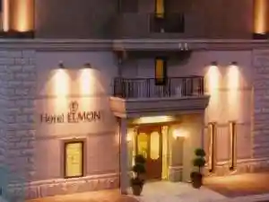
ＭＥＩＪＩＫＡＮ
MEIJIKAN
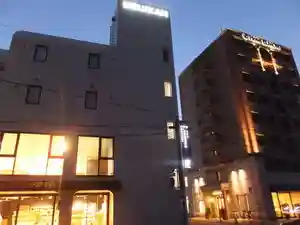
HOTEL AZ 福岡筑後店
HOTEL AZ

船小屋温泉 ホテル樋口軒
Fune Koya Onsen Hotel Higuchi Ken
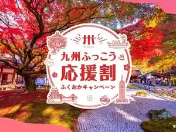
筑後船小屋 公園の宿
Chikugo Fune Koya Kouen No Yado
Sights
Koi Ki Shrine
Fukuokaken Ei Chikugo Koiki Park
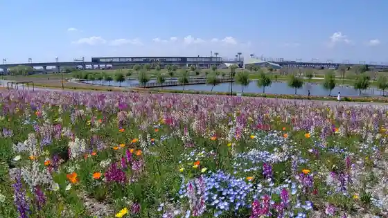
Fune Koya Onsen
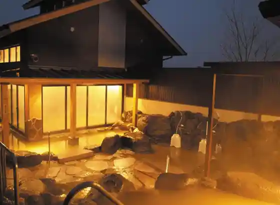
Kawa no Eki Fune Koya Koi Botaru
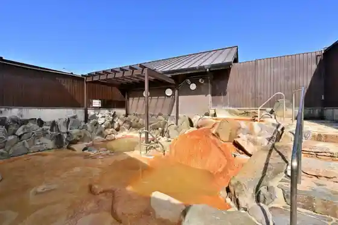
Kyushu Geibun Kan (Chikugo Koiki Koen Geijutsu Bunka Koryu Shisetsu)
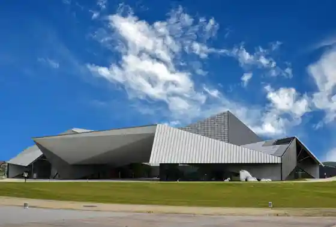
Fune Koya Kosen Ba
Hane Inu Monyumento
Kumano Shrine (Chikugo)
Kaku Farm
Awashima Shrine
Akasaka Dojin Katachi (Akasaka Ame Honpo)
HAWKS Besuboru Park Chikugo
Ai Hana Tanaka Kasuri Workshop
Mizoguchi Kamado Mon Shrine (Chikugo)
Ogata Kasuri Workshop
Experience Eria no Wairudofurawa
Ikeda Kasuri Workshop
Sutendogurasu Ruri Workshop